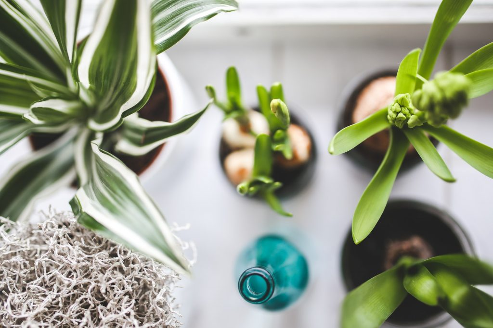

Nogen vil måske kalde dem idiotsikre planter. I hvert fald kan de leve flere uger uden vand. De kan endda dø, hvis du vander dem for meget og derfor – måske – endda overleve hjemme hos dig
Hvis du læser denne artikel gætter vi på, du ikke er typen, der overvander dine planter. Måske har du givet op på at skabe en grøn oase i din stue, men det behøver du slet ikke, for disse grønne gevækster vil trives rigtig fint hjemme hos dig. Måske vil de endda overleve i længere tid! De skal nemlig ikke have vand særlig tit.
Kaktus
VAND: HØJST EN GANG OM MÅNEDEN
Den her havde du nok regnet ud. Kaktus kan stå rigtig længe uden at blive vandet, og derfor er den svær at slå ihjel. Medmindre du selvfølgelig går i den anden grøft og begynder at overvande den.
Det eneste, du skal tænke på med kaktus er, at den skal stå på et solrigt sted, for eksempel i en sydvendt vindueskarm, hvor den får mindst to timers sollys om dagen.
Kaktusser kan godt gå i vinterhi, og der skal de have endnu mindre vand. Slå din kaktus op på nettet, for at finde de helt specifikke vandingsregler, men en god rettesnor er, at din kaktus skal være mørkegrøn i det, og stængler faste. Så har den det godt.
Jernplante
VAND: MINDRE END EN GANG OM UGEN. LAD UDTØRRE MELLEM VANDINGER
Jernplanten har ikke brug for meget lys og derfor heller ikke meget vand. Faktisk kan den trives fint, selv om den står både mørkt og koldt. Derudover er den ret flot og trendy med sine skinnende, mørkegrønne blade.
Om sommeren kan du være heldig at spotte hvide, klokkeformede blomster, der er bordeaux indvendigt.
Duft-dracæna
VAND: VAND IKKE, HVIS DU ER I TVIVL! LAD HALVDELEN TØRRE UD, FØR DU VANDER
På engelsk kaldes planten for Janet Craig plant, og den er kendt for sine superskinnende blade og sin overlevelsesevne i selv de mørkeste boliger. Jo mindre lys, jo mindre vand har den brug for.
Alligevel har den et stort, lidt busket look, der virkelig vil live op i indretningen.
Duft-dracæna kan dræbes ved at stille den i solen.

Svigermors skarpe tunge
VVAND: HVER ANDEN TIL TREDJE UGE OG KUN, NÅR JORDEN ER TØR
Ja, det er altså en plante, der er tale om. Svigermors skarpe tunge er det danske navn for planten, der på engelsk hedder snake plant, men også kaldes Sansevieria trifasciata, hvis du skal ned og nørde på planteskolen.
Den har nogle meget lange, tykke blade, der holder godt på vandet og har flotte både gule, grønne og hvide farver. Den elsker lys, men kan sagtens klare sig med lidt af det, og den kan nemt overvandes. Sidstnævnte er helt perfekt til dig.


Læs mere fra samme kategori